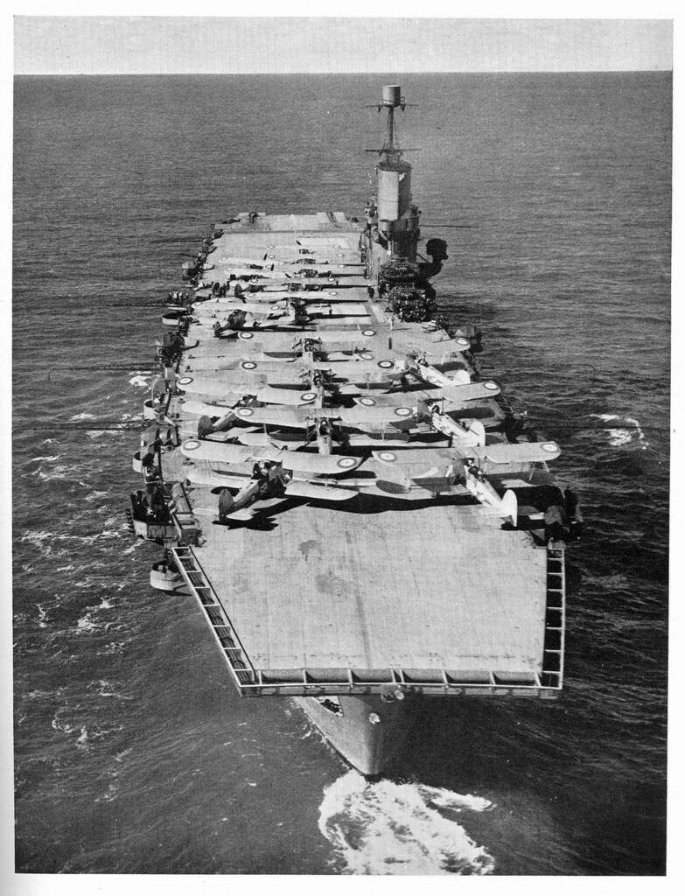
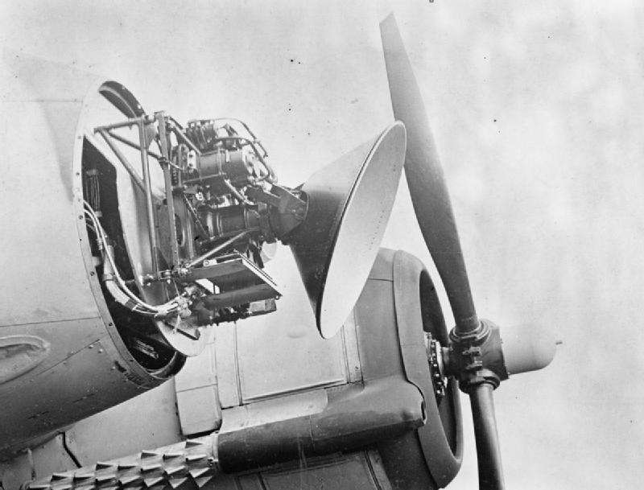
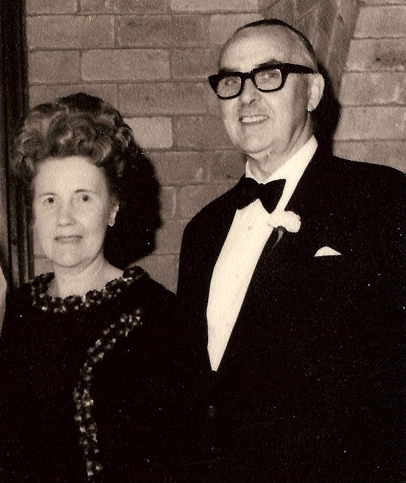

레이더 개발 이야기 (7) - 영국에는 육군도 있다!
게시: 2022-10-27T06:30:11+09:00
<HMS Ark Royal과 가수 Sting> 로열 네이비가 모든 주요 군함에 레이더를 달기로 결정한 것이 1939년 8월 10일. 전에 언급했듯이 항공모함들은 워낙 바빠서 레이더를 달 짬을 내지 못했으나, 막 진수된 HMS Illustrious (사진1, 39년 4월 진수, 2만8천톤, 30노트)를 비롯한 신형 항모들에게는 레이더를 당연히 장착했고, 기존 항모들에게도 시간이 나는 대로 레이더를 장착. 이러고나자 1939년 9월 3일 WW2가 터짐.

당시 로열 네이비는 HMS Illustrious를 포함한 신규 항모들의 비행갑판을 3인치 두께의 장갑판으로 입혔음. 이유는 아무리 머리를 굴려보아도 아군 함대를 향해 날아오는 적 폭격기들을 원거리에서 포착할 방법이 없으니 제때 막아낼 방법이 없었던 것. 그래서 일단 내습하는 폭격기들의 폭탄을 두꺼운 장갑판으로 막아내려 했던 것. 이렇게 두껍고 무거운 장갑판을 입히면 항모의 무게 중심 문제도 어려워지지만 기본적으로 속도와 탑재기 대수가 크게 줄어들 수 밖에 없음. 그런데 레이더의 발명이 그 모든 것을 뒤바꾸어 놓음. 로열 네이비가 실전에서 레이더의 가치를 확인한 것은 불과 1달도 안된 1939년 9월 26일. 북해에서 잠수함 HMS Spearfish가 독일해군 수상함정들에게 피격되어 절름거리며 탈출하자, 전함 HMS Rodney와 HMS Nelson이 항모 HMS Ark Royal (사진2, 2만7천톤, 30노트)과 함께 그 엄호를 위해 출동.

아직 아크로열에게는 레이더가 없었지만 전함 로드니는 로열 네이비 최초로 레이더를 장착한 전함. 로드니는 120km 밖에서 독일공군 폭격기들의 대형 편대가 다가오는 것을 레이더로 탐지. 레이더가 없었다면 그 폭격기 편대가 감시병 시야에 들어왔을 때는 아크로열이 요격 전투기를 출격시키기에는 너무 늦었을 것. 그러나 이제 레이더가 장착되자 미리 전투기를 떼로 띄워 원거리에서 요격이 가능해진 것. 당시 로열 네이비의 항모 설계를 담당하던 고위층은 전쟁 이후 평가할 때 '레이더의 가치를 미리 알았다면 항모의 탑재기 수를 줄여가면서까지 비행갑판에 장갑을 깔지는 않았을 것'이라고 평가. 그래서 아크로열의 전투기들이 그 독일 폭격기들을 다 아작을 냈을까? 아님. 가만 보니 그 폭격기들은 로드니와 넬슨이 아닌 다른 로열 네이비 함대를 향해 접근하던 중. 그래서 그냥 가만히 있기로 했다고. Sting의 명곡 Englishman in New York (사진3) 의 한 구절을 떠올리게 하는 부분. Takes more than combat gear to make a man Takes more than a license for a gun Confront your enemies, avoid them when you can A gentleman will walk but never run 전투장구를 갖췄다고 남자가 되는 것은 아니야 라이센스를 얻었다고 총을 가질 자격이 있는 것도 아니지 적에게 당당히 맞서되, 할 수 있다면 피하는 것이 좋아 신사는 걸을 뿐 절대 뛰지 않아

https://www.youtube.com/watch?v=d27gTrPPAyk
<독일애들이 얌전히 당하기만 할까?> 한편, 로열 에어포스는 자기들만 똑똑하고 독일애들은 바보라고 생각하지 않았음. 영국 공군은 Chain Home이라고 불리는 일련의 레이더 감시망을 영국 동부 해안 일대에 걸쳐 건설하면서도 독일놈들이 이 레이더(당시엔 RDF, 즉 radio direction finder라고 알려졌음)에 대해 알아낼 경우 어떻게 대응할 것인지 입장을 바꿔 생각해보았음. 어렵지 않게 나온 결과는 '독일군은 주간 폭격을 포기하고 야간 폭격에 집중할 것'이라는 결론. 레이더를 이용하면 야간에라도 아군 전투기를 독일 폭격기 근처까지는 유도할 수는 있겠으나, 깜깜한 밤중에는 불과 2~3km 떨어진 곳을 유유히 날고 있는 독일 폭격기도 영국 전투기 조종사 눈에는 보이지 않을 수 있음. 영국 공군은 거기에 대해서도 대응책을 마련하기로 함. 레이더쟁이들끼리 모여서 대응책을 논의했으니 당연히 나오는 대응책은 역시 레이더. 전투기에도 레이더를 실어서, 칠흑 같이 어두운 밤에도 전파로 적 폭격기를 찾아내 격추하자는 것. 그러자면 레이더가 매우 작아야 했고 전력도 적게 먹어야 했음. 조종사가 낮에 눈으로 볼 수 있을 정도의 거리에서 적기를 찾으면 됨. 그러나 당시 로열 에어포스가 연구해서 만들던 것은 수백 kW의 전력으로 강력한 전파를 쏘아 백km가 넘는 거리에서 독일군 폭격기를 잡아내는 거대한 레이더들. 이런 것만 연구하고 만들던 공군 연구원들이 갑자기 항공기에 실을 만한 작은 레이더를 만들어내는 것은 불가능한 일. 그런데 정말 생각하지도 않은 곳에서 실마리가 풀림. 평소 공군이 '근육과 근성 빼고는 아무 것도 없는 야만인'이라고 비웃던 육군이 답을 가지고 있었음. ** 아래 사진은 대형 전투기인 Bristol Beaufighter에 장착된 Airborne Interception 레이더인 Mk. VIII. 이 개량형이 나온 것은 1942년임.

<최초의 레이더 아이디어가 어느 군에서 나왔다고?> 로열 에어포스가 지들이 레이더라는 개념을 처음 고안했다고 스스로 자축할 때 웃기지도 않는다고 생각하던 사람들이 바로 영국 육군. 육군은 체력과 용기만 있으면 된다고 생각하는 것은 공군 뿐이었고, 모든 군대는 통신 및 탐지/측정 기술에 진심이었음. 생각해보면 공군이야 그냥 조종사가 대충 눈으로 보고 육감으로 방아쇠를 당기지만, 육군은 지평선 너머 눈에 보이지도 않는 곳으로 수십 km를 날아가는 대포를 쏘아야 함. 그러니 당연히 정확한 거리 및 방위각 측정이 매우 중요했음. 그래서 육군에서도 전파 공학을 연구하던 사람들이 있었고, 해군에 Royal Navy Signal School이 있듯이 육군에는 Signals Experimental Establishment (SEE)가 있었음. 전에 설명했듯이 공군이 레이더를 만들게 된 계기는 1935년 '뭐 살인 광선 같은 거 없냐'라는 고위층의 무식한 질문에서 시작된 것이지만, 육군 신호실험실(SEE)의 W. A. S. Butement과 P. E. Pollard는 그보다 5년 전인 1930년 이미 실질적인 레이더 기술을 고안했었음. 바로 해안 방어용 포대를 위한 적함과의 거리 탐지기용 레이더. 돌이켜 생각하면 기가 막히게 실용적인 아이디어. 그러나 불행히도 당시 영국 육군 수뇌부는 '군인이라면 근육과 용기를 키워야지 무슨 범생이처럼 전기 회로도를 끼적거리고 있담?' 이라며 그 아이디어를 철저히 묵살. 1936년 이후 나중에야 공군에서 레이더를 만들고 있다는 소리를 들은 육군 수뇌부는 뒤늦게 SEE의 연구원들을 공군 연구소에 보내 자신들도 숟가락을 얹으려 함. 이때 이 공군 레이더 연구소의 육군 연구실은 Army Cell이라고 불렸고 여기에는 최초의 레이더 고안자들인 뷰트먼트와 폴라드도 여기에 참여. 그런데 이때 Army Cell에게 주어진 숙제는 공군이나 해군과는 다른 것은 물론, 6년 전 자기들이 처음 고안했던 용도와도 전혀 다른 성질의 것. 바로 바로 머리 위 하늘에 떠있는 적 항공기의 고도를 정확히 탐지해 내라는 것. 눈에 뻔히 보이는 적 항공기의 고도를 뭐하러 알아내라는 것이었을까? ** 아래 사진이 William Alan Stewart Butement. 뉴질랜드 사람인 그가 영국 육군의 대포 조준(gun laying)을 위한 레이더 개발을 제안했을 때의 나이가 불과 26세. 이후 영국 및 호주 방위산업에 큰 기여를 하고 85세까지 장수했음.
